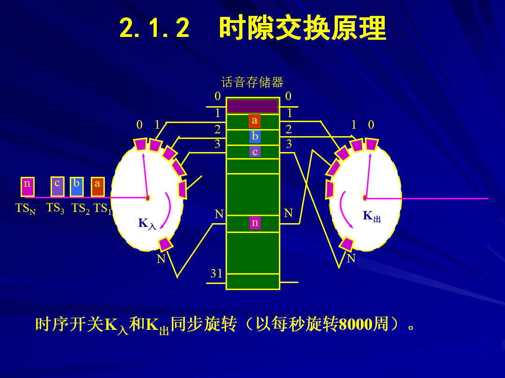
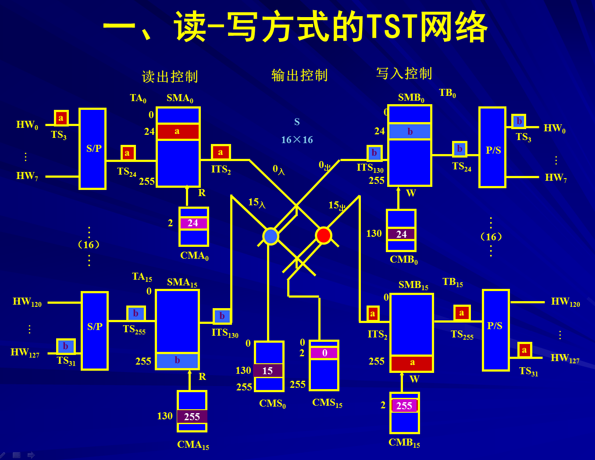

交换技术的概况
交换技术的分类
交换的本质
时隙的交换
交换技术分类
模拟交换
数字交换
布控交换
程控交换
窄带交换
宽带交换
电路交换
传统的电路交换
多速率电路交换
快速电路交换
分组交换
虚电路和数据报的区别
路由选择
帧交换
快速分组交换
T/S接线器
T型时分接线器
基本组成
话音存储器（SM）和控制存储器（CM）
工作原理
输出控制方式、输入控制方式
S型时分接线器
基本组成
由m x n交叉点矩阵和CM组成
工作原理
输出控制方式、输入控制方式
三级时分交换网络
T-S-T型时分交换网络 S-T-S型时分交换网络
交换技术的发展
电话交换技术的发展
分组交换技术的发展
ATM交换技术的发展
IP交换技术的发展
电话交换信令的方式
信令的类型：带内信令 、随路信令 、分组信令 、公共信道信令
用户线信令：用户状态信令 、 选择信令 、各种可闻信令
局间信令： 中国一号信令（属于随路信令） 、 中国7号信令（属于共路信令）
数字交换与数字交换网络
数字交换原理： 数字交换、 时隙交换原理 、数字交换网络
阻塞的概念
阻塞是指主向发出呼叫时，被叫虽然空闲，但是由于网络内部链路不通，而使呼叫损失的情况
 
返回